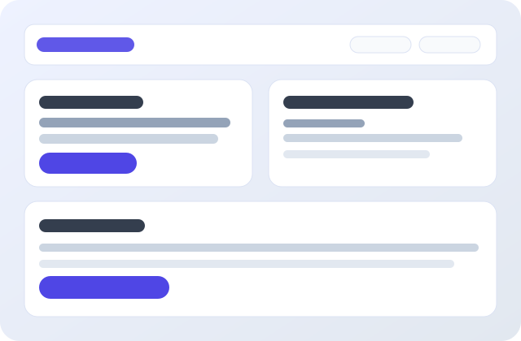

Proactive Agent Framework
Onboarding-, Memory- und Workflow-System für einen autonomen AI-Companion mit Fokus auf Zuverlässigkeit.
OpenClawAgent DesignTypeScript
Repository öffnen
Hey, ich bin
IT-Student aus Wien · Fokus auf IT Support, SysAdmin & Automation
Diese Seite ist mein kompaktes About-me Profil: für Leute, die über GitHub auf mich stoßen, und für Firmen, die schnell sehen wollen, wie ich arbeite, was ich baue und wonach ich suche.
const tadeas = {
role: "IT-Student & Automation Developer",
lookingFor: "Vollzeitrolle ab März 2026",
strengths: ["hands-on", "strukturiert", "lernbereit"],
focus: ["IT Support", "Systemadministration", "DevOps"],
location: "Wien"
};
// Build practical solutions 🚀
Ich mache komplexe IT-Themen verständlich und umsetzbar. Besonders Spaß macht mir, wenn aus manuellen Abläufen stabile, dokumentierte Prozesse werden.
Onboarding-, Memory- und Workflow-System für einen autonomen AI-Companion mit Fokus auf Zuverlässigkeit.
Whisper-Workflow mit ffmpeg-Integration für stabile Audio-zu-Text-Prozesse und reproduzierbare Setups.
Deployment-Pipelines für statische Seiten via GitHub Actions mit schnellem Iterationszyklus.
Wenn du über GitHub hier gelandet bist oder ein Team Verstärkung sucht: gerne schreiben.